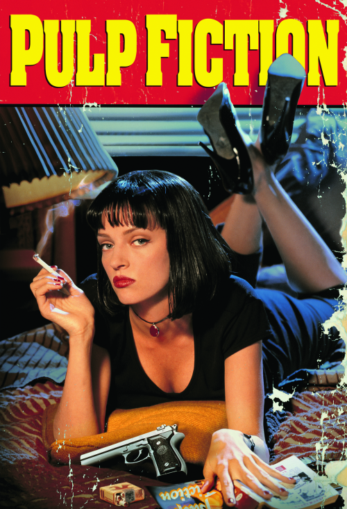
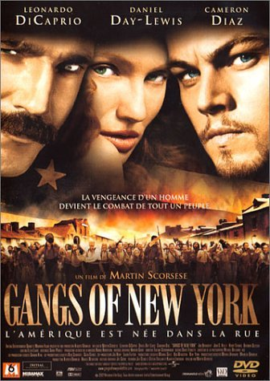

Lilian Garrido
Junior Developper Ruby
9 intensive weeks learning "How to code" : basics & good practices Backend development - Ruby - Ruby on Rails - JavaScript (including JQuery & AJAX) - SQL Frontend development (language & tools) - HTML - CSS - Bootstrap Web-development best practices : - Code versioning and collaboration techniques on Github - Continuous deployment and scaling on Heroku.
My Tools


|  |
Pulp FictionPulp Fiction is a 1994 American neo-noir crime black comedy film written and directed by Quentin Tarantino, from a story by Tarantino and Roger Avary. |
|  |
Gang of New-YorkGangs of New York is a 2002 American historical crime film set in the mid-19th century in the Five Points district of New York City. It was directed by Martin Scorsese and written by Jay Cocks, Steven Zaillian, and Kenneth Lonergan. |

|
Saving Private RyanSaving Private Ryan is a 1998 American epic war drama film set during the Invasion of Normandy in World War II. |
About this page
This page has been coded during the FullStack program @LeWagon. That was probably the best experience of my entire life.